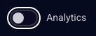
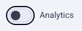
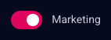
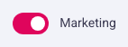

Switch
A track and a thumb that hold an on or an off and take effect the moment they flip. The kit draws one form, its own. It stands on no coloured screen yet: settings (node 5.11) arrive with the rollout, so this page is the one place it is drawn. Everything on it is drawn by design/system/components/switch.css through index.css.
Anatomy
Not on a coloured screen yet: settings arrive with the rollout. The words are samples (D-124).
| Part | Class or element | What to change there |
|---|---|---|
| The press | .switch (a label) | the gap to the words and the body ink; the whole label is the target |
| The track | .switch > input | the native checkbox drawn by the file: --size-switch-w by --size-switch-h, a pill, the tile's fill and a 2px ring; on, the act's pink and no ring |
| The thumb | input::after | a circle one gap inside the track; mist grey off, white on, sliding by the track's slack |
| The words | any element after the input, or none | the name of what it switches; with none, the input carries an aria-label |
Variants and sizes
One form, no size and no emphasis. The size below is read from the rendered track, not from the stylesheet.
- Content = with its words, or alone. With words the label is the press. Alone the track carries an
aria-label. - The 44px press = the container's. The track is shorter than
--size-tap; a row that holds it gives the row the height, as a settings line will.
| Content | Off | On | Where it stands |
|---|---|---|---|
| With its words | settings (5.11), when it is drawn | ||
| Alone | a row whose words sit apart from the track |
When to use
A switch holds a setting that is on or off and takes effect at once, with no Save beside it: which purposes the cookie layer may store ("Analytics", "Marketing"), a sound, an alert. The words name the thing that changes, never the state, because the track already says on or off. A choice the person makes and then confirms with an act is a checkbox in a form, not a switch.
Rule and anti-rule
Use it
"Analytics" in the cookie settings: one row, one switch, and the answer saved as it flips. The row says what it counts and who sees it.
Take another component
A declaration or a pick that is read when an act is pressed is a Checkbox. One choice among a few is a Radio or a Segmented control. A limit on deposits or sessions is a Text field with its save, never a switch: a limit is a boundary the person sets deliberately.
States
Live at rest, on this page's theme: press them, reach them with Tab and flip them with Space.
Snapshots of the same instances, dark on the left and light on the right, taken with reduced motion so each shows the face the state settles on. On is a twin at rest, set by the product's own :checked, and focus is shot on the native track, the element Tab reaches.


--line-focus

--bg-act, --bg-mark-on-plate- No hover, no active, no disabled look.
kit.cssdraws neither a hover nor a press on a switch, and none is added. A switch stays live and refuses with its reason beside it (D-58), so it draws no refusal ring. - Reduced motion takes the slide and the fill's fade away: the thumb is simply at its end.
node design/kit/tools/shoot-states.js http://localhost:8765/ switch # re-shoot after a change to switch.css or its tokens node design/kit/tools/shoot-states.js http://localhost:8765/ switch --check # step 9: fails if a snapshot drifted
In the code
| Token | Kind | Dark | Light |
|---|
Read live from tokens.css. The track's fill, the act's fill and the white thumb come from the semantic level; the track's ring at rest and the off thumb are component tokens because no line role holds that navy and no fill role holds the mist grey (decided at the round's gate). Geometry, type and motion come straight from the primitives.
File: design/system/components/switch.css, loaded by design/system/index.css in the atoms' group.
<label class="switch"><input type="checkbox"><span>Analytics</span></label> <label class="switch"><input type="checkbox" checked aria-label="Marketing"></label>
Stands on: no coloured screen yet. The pack counted one grey page for it, settings (5.11), which arrives with the rollout; until then this page is its only place. The samples below use the words of the cookie layer (microcopy 0.4-34 and 0.4-36) as stand-ins.